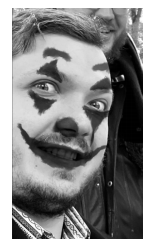

Leo Nikolaev
Clown that Cried
Macumentary autobiographical short movie projected on
screen.
During countless hours spent while maniacally self-analysing my past art
I came with idea to use all this otherwise wasted energy to make some
complex creative endeavor. Then and there was born concept of Clown
that cried. Fake documentary comedic masterpieces such as
unforgettable body of work of Sasha Baron Cohen: Borat and Alli G or
masterful mockumentaries like of I’m still here by Joaquin Phoenix and
Andy Samberg parody of biopic Popstar: Never stop never stopping made
me throw my hat into a ring and try my luck with this bizarre and obscure
format. Story of my story starts in sunny past of 2015 when Im being
interviewed by Don Lemon of CNN about my blossoming career of
multiple Oscar winning career of actor, director and professor of
medicine. In the end Don Lemon will asks me what next for me and I will
answer “I will spend a lot of my time focusing on my true passion. Hard
cut 10 years into to future un year of 2025 into day when I OD’ed on
Ozempic and disappeared. Next part of the documentary will be focused
on celebrity host Werner Herzhog trying to narrate my life while my friend
Elias Bauer tries to solve mystery of if I’m alive, why have I disappeared
and where have I gone. That story will run parallel to me raising back from
the dead from makeshift underground bunker where I spend couple last
months. In the end I will conclude mystery with long DaVinci code style
analysis of my past art. With this art piece I want finalize my study on
PCU as well as critique cult of personality, commodification of celebrities
as well hyper stimulated 24 news cycle of media space.
instagram:@n.i.c.o.l.a.w
𖹭𖹭 back 𖹭𖹭